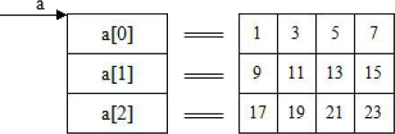
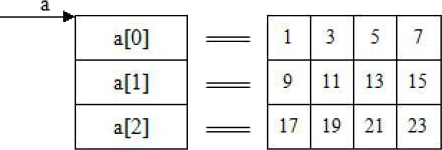

首页 > 编程笔记
二维数组指针表示，C语言指针引用二维数组详解
指针变量可以指向一维数组中的元素，当然也就可以指向二维数组中的元素。但是在概念和使用方法上，二维数组的指针比一维数组的指针要复杂一些。要理解指针和二维数组的关系首先要记住一句话：二维数组就是一维数组，这句话该怎么理解呢？
假如有一个二维数组：

a[0]、a[1]、a[2] 既然是一维数组名，一维数组的数组名表示的就是数组第一个元素的地址，所以 a[0] 表示的就是元素 a[0][0] 的地址，即 a[0]==&a[0][0]；a[1] 表示的就是元素 a[1][0] 的地址，即 a[1]==&a[1][0]；a[2] 表示的就是元素 a[2][0] 的地址，即 a[2]==&a[2][0]。
所以二维数组a[M][N]中，a[i]表示的就是元素a[i][0]的地址，即（式一）：
上面几个公式很“绕”，理清楚了也很简单，关键是把式二和式五记住。
除此之外你也可以把指针变量 p 定义成 int(*)[N] 型，这时就可以把 a 赋给 p，而且用这种方法的人还比较多，但我不喜欢，因为我觉得这样定义看起来很别扭。
如果将二维数组名 a 赋给指针变量 p，则有（式六）：
1 2 3 4
5 6 7 8
9 10 11 12
如果把 &a[0][0] 赋给指针变量 p 的话，那么如何用 p 指向元素 a[i][j] 呢？在前面讲过，对于内存而言，并不存在多维数组，因为内存是一维的，内存里面不分行也不分列，元素都是按顺序一个一个往后排的，所以二维数组中的每一个元素在内存中的地址都是连续的，写一个程序来验证一下：
0X18FF18 0X18FF1C 0X18FF20 0X18FF24
0X18FF28 0X18FF2C 0X18FF30 0X18FF34
0X18FF38 0X18FF3C 0X18FF40 0X18FF44
我们看到地址都是连续的。所以对于数组 a[3][4]，如果把 &a[0][0] 赋给指针变量 p 的话，那么：
所以对于二维数组 a[M][N]，如果将 &a[0][0] 赋给指针变量 p 的话，那么 p 访问二维数组元素 a[i][j] 的公式就是：
1 2 3 4
5 6 7 8
9 10 11 12
结果是一样的。两种方法相比，第二种方法更容易接受，因为把 &a[0][0] 赋给指针变量 p 理解起来更容易，而且 p 定义成 int* 型从心理上或从感觉上都更容易接受。
假如有一个二维数组：
int a[3][4] = {{1, 3, 5, 7}, {9, 11, 13, 15}, {17, 19, 21, 23}};
其中，a 是二维数组名。a 数组包含 3 行，即 3 个行元素：a[0]，a[1]，a[2]。每个行元素都可以看成含有 4 个元素的一维数组。而且 C 语言规定，a[0]、a[1]、a[2]分别是这三个一维数组的数组名。如下所示：

a[0]、a[1]、a[2] 既然是一维数组名，一维数组的数组名表示的就是数组第一个元素的地址，所以 a[0] 表示的就是元素 a[0][0] 的地址，即 a[0]==&a[0][0]；a[1] 表示的就是元素 a[1][0] 的地址，即 a[1]==&a[1][0]；a[2] 表示的就是元素 a[2][0] 的地址，即 a[2]==&a[2][0]。
所以二维数组a[M][N]中，a[i]表示的就是元素a[i][0]的地址，即（式一）：
a[i] == &a[i][0]
我们知道，在一维数组 b 中，数组名 b 代表数组的首地址，即数组第一个元素的地址，b+1 代表数组第二个元素的地址，…，b+n 代表数组第 n+1 个元素的地址。所以既然 a[0]、a[1]、a[2]、…、a[M–1] 分别表示二维数组 a[M][N] 第 0 行、第 1 行、第 2 行、…、第 M–1 行各一维数组的首地址，那么同样的道理，a[0]+1 就表示元素 a[0][1] 的地址，a[0]+2 就表示元素 a[0][2] 的地址，a[1]+1 就表示元素 a[1][1] 的地址，a[1]+2 就表示元素 a[1][2] 的地址……a[i]+j 就表示 a[i][j] 的地址，即（式二）：a[i]+j == &a[i][j]
将式一代入式二得（式三）：&a[i][0]+j == &a[i][j]
在一维数组中 a[i] 和 *(a+i) 等价，即（式四）:a[i] == *(a+i)(13-4)
这个关系在二维数组中同样适用，二维数组 a[M][N] 就是有 M 个元素 a[0]、a[1]、…、a[M–1] 的一维数组。将式四代入式二得（式五）：*(a+i)+j == &a[i][j]
由式二和式五可知，a[i]+j 和 *(a+i)+j 等价，都表示元素 a[i][j] 的地址。上面几个公式很“绕”，理清楚了也很简单，关键是把式二和式五记住。
二维数组的首地址和数组名
下面来探讨一个问题：“二维数组 a[M][N] 的数组名 a 表示的是谁的地址？”在一维数组中，数组名表示的是数组第一个元素的地址，那么二维数组呢？ a 表示的是元素 a[0][0] 的地址吗？不是！我们说过，二维数组就是一维数组，二维数组 a[3][4] 就是有三个元素 a[0]、a[1]、a[2] 的一维数组，所以数组 a 的第一个元素不是 a[0][0]，而是 a[0]，所以数组名 a 表示的不是元素 a[0][0] 的地址，而是 a[0] 的地址，即：a == &a[0]
而 a[0] 又是 a[0][0] 的地址，即：a[0] == &a[0][0]
所以二维数组名 a 和元素 a[0][0] 的关系是：a == &(&a[0][0])
即二维数组名 a 是地址的地址，必须两次取值才可以取出数组中存储的数据。对于二维数组 a[M][N]，数组名 a 的类型为 int(*)[N]，所以如果定义了一个指针变量 p：int *p;
并希望这个指针变量指向二维数组 a，那么不能把 a 赋给 p，因为它们的类型不一样。要么把 &a[0][0] 赋给 p，要么把 a[0] 赋给 p，要么把 *a 赋给 p。前两个好理解，可为什么可以把 *a 赋给 p？因为 a==&(&a[0][0])，所以 *a==*(&(&a[0][0]))==&a[0][0]。除此之外你也可以把指针变量 p 定义成 int(*)[N] 型，这时就可以把 a 赋给 p，而且用这种方法的人还比较多，但我不喜欢，因为我觉得这样定义看起来很别扭。
如果将二维数组名 a 赋给指针变量 p，则有（式六）：
p == a
那么此时如何用 p 指向元素 a[i][j]？答案是以“行”为单位进行访问。数组名 a 代表第一个元素 a[0] 的地址，则 a+1 就代表元素 a[1] 的地址，即a+1==&a[1]；a+2 就代表 a[2] 的地址，即 a+2==&a[2]……a+i 就代表 a[i] 的地址，即（式七）：a+i == &a[i]
将式六代入式七得：p+i == &a[i]
等式两边作“*”运算得：*(p+i) == a[i]
等式两边同时加上j行（式八）：*(p+i) + j == &a[i][j]
式八就是把二维数组名 a 赋给指针变量 p 时，p 访问二维数组元素的公式。使用时，必须先把 p 定义成 int(*)[N] 型，然后才能把二维数组名 a 赋给 p。那么怎么把 p 定义成 int(*)[N] 型呢？关键是 p 放什么位置！形式如下：int (*p)[N] = a; /*其中N是二维数组a[M][N]的列数, 是一个数字, 前面说过, 数组长度不能定义成变量*/下面编一个程序来用一下：
# include <stdio.h>
int main(void)
{
int a[3][4] = {1, 2, 3, 4, 5, 6, 7, 8, 9, 10, 11, 12};
int i, j;
int (*p)[4] = a; //记住这种定义格式
for (i=0; i<3; ++i)
{
for (j=0; j<4; ++j)
{
printf("%-2d\x20", *(*(p+i)+j)); /*%-2d中, '-'表示左对齐, 如果不写'-'则默认表示右对齐；2表示这个元素输出时占两个空格的空间*/
}
printf("\n");
}
return 0;
}
输出结果是：1 2 3 4
5 6 7 8
9 10 11 12
如果把 &a[0][0] 赋给指针变量 p 的话，那么如何用 p 指向元素 a[i][j] 呢？在前面讲过，对于内存而言，并不存在多维数组，因为内存是一维的，内存里面不分行也不分列，元素都是按顺序一个一个往后排的，所以二维数组中的每一个元素在内存中的地址都是连续的，写一个程序来验证一下：
# include <stdio.h>
int main(void)
{
int a[3][4] = {1, 2, 3, 4, 5, 6, 7, 8, 9, 10, 11, 12};
int i, j;
for (i=0; i<3; ++i)
{
for (j=0; j<4; ++j)
{
printf("%#X\x20", &a[i][j]);
}
printf("\n");
}
return 0;
}
输出结果是：0X18FF18 0X18FF1C 0X18FF20 0X18FF24
0X18FF28 0X18FF2C 0X18FF30 0X18FF34
0X18FF38 0X18FF3C 0X18FF40 0X18FF44
我们看到地址都是连续的。所以对于数组 a[3][4]，如果把 &a[0][0] 赋给指针变量 p 的话，那么：
p == &a[0][0]; p + 1 == &a[0][1]; p + 2 == &a[0][2]; p + 3 == &a[0][3]; p + 4 == &a[1][0]; p + 5 == &a[1][1]; p + 6 == &a[1][2]; p + 7 == &a[1][3]; p + 8 == &a[2][0]; p + 9 == &a[2][1]; p + 10 == &a[2][2]; p + 10 == &a[2][3];如果仔细观察就会发现有如下规律：
p+i*4+j == &a[i][j]
其中 4 是二维数组的列数。所以对于二维数组 a[M][N]，如果将 &a[0][0] 赋给指针变量 p 的话，那么 p 访问二维数组元素 a[i][j] 的公式就是：
p + i*N +j == &a[i][j]
下面把验证式八的程序修改一下，验证一下上式：
# include <stdio.h>
int main(void)
{
int a[3][4] = {1, 2, 3, 4, 5, 6, 7, 8, 9, 10, 11, 12};
int i, j;
int *p = &a[0][0]; //把a[0][0]的地址赋给指针变量p
for (i=0; i<3; ++i)
{
for (j=0; j<4; ++j)
{
printf("%-2d\x20", *(p+i*4+j));
}
printf("\n");
}
return 0;
}
输出结果是：1 2 3 4
5 6 7 8
9 10 11 12
结果是一样的。两种方法相比，第二种方法更容易接受，因为把 &a[0][0] 赋给指针变量 p 理解起来更容易，而且 p 定义成 int* 型从心理上或从感觉上都更容易接受。
关注公众号「站长严长生」，在手机上阅读所有教程，随时随地都能学习。内含一款搜索神器，免费下载全网书籍和视频。

微信扫码关注公众号